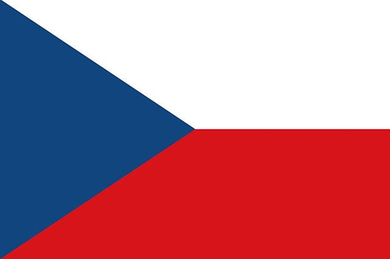
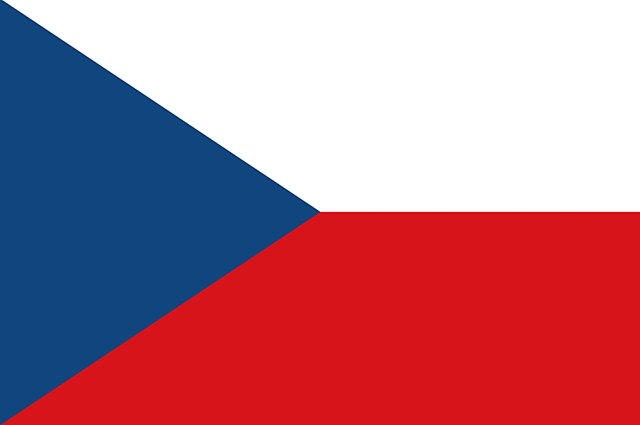

Die Tour 2024
Das Datum für die Tour im nächsten Jahr steht fest. Save the Date!
22.6.2024-28.06.2024
Der 22.6. ist Anreisetag, am 28.06. reisen wir ab, sodass wir wieder 5 volle Tage zum racen haben! Aber wo geht die Reise hin? Das wird natürlich (so halbwegs) demokratisch entschieden! Alle Finisher*innen des Jahres 2023 haben sich ihr Stimmrecht erworben. Abgestimmt wird Ende November in der WhatsApp Gruppe. Zur Auswahl steht das Setesdal in Südnorwegen und der Böhmerwald in Tschechien!
 
